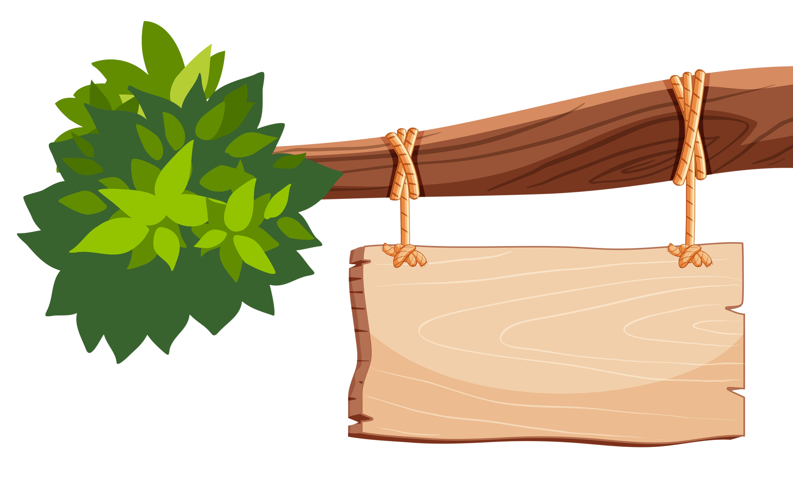

Mille Sabords
Yohoho moussaillons ! Prêts pour une nouvelle aventure sur les mers tumultueuses des Caraîbes ?
Ce jeu mettra à l'épreuve votre audace, votre stratégie mais également votre chance. Armez-vous de vos dés et
préparez-vous à braver les surprises que les cartes vous réservent pour devenir le pirate le plus redouté des océans !
Chaque lancer est une opportunité de remplir votre cale de butin, mais également de subir les foudres de la mer.
Allez-vous risquer le tout pour le tout, ou choisir de sécuriser vos gains ? la décision vous appartient !
Définir l'objectif de la partie
Ajouter les joueurs
